Produire de l'électricité sans rien brûler, on sait faire. Le vrai problème arrive juste après : l'électricité ne se garde pas. Il faut la transformer en autre chose — en eau montée, en air comprimé, en roue qui tourne, en blocs de béton hissés à 100 mètres.
Quatre façons d'obtenir du courant sans brûler quoi que ce soit : à partir d'un mouvement, d'une source de chaleur, d'un rayonnement, ou d'une réaction chimique.
La majeure partie de l'électricité produite dans le monde implique une combustion de ressources fossiles (charbon, pétrole, gaz), génératrice de CO₂. Or le CO₂ est le principal gaz responsable du changement climatique. Il faut donc trouver d'autres moyens de produire de l'électricité.
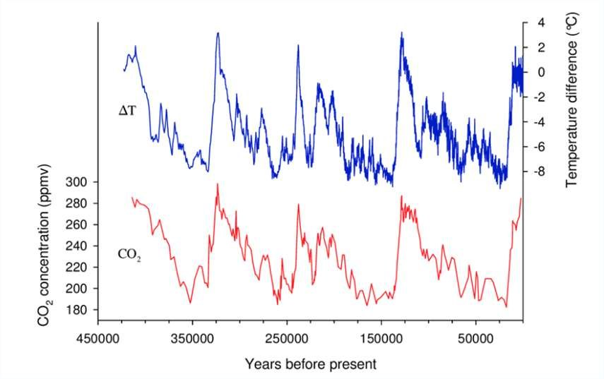
On l'a vu au chapitre précédent : la conversion d'énergie mécanique en énergie électrique implique un alternateur. Les sources d'énergie mécanique dans la nature sont le vent (utilisé par les éoliennes) et le mouvement de l'eau (utilisé par les barrages hydroélectriques, les hydroliennes et les usines marémotrices).
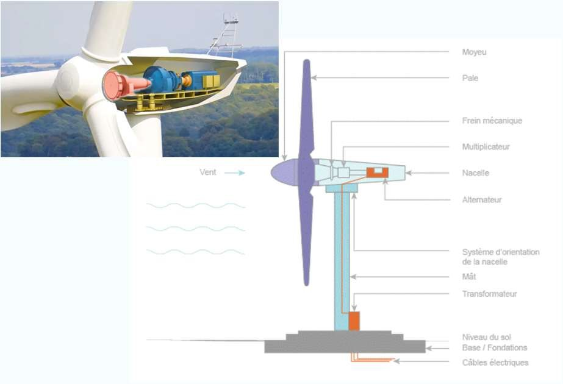
1 · La chaîne énergétique d'un barrage hydroélectrique se lit comme ceci :
| Nom de la turbine | Type (action / réaction) | Pour quelle centrale ? |
|---|---|---|
| Francis (1838) | ||
| Kaplan (1912) | ||
| Pelton (1879) |
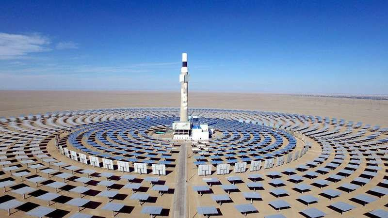
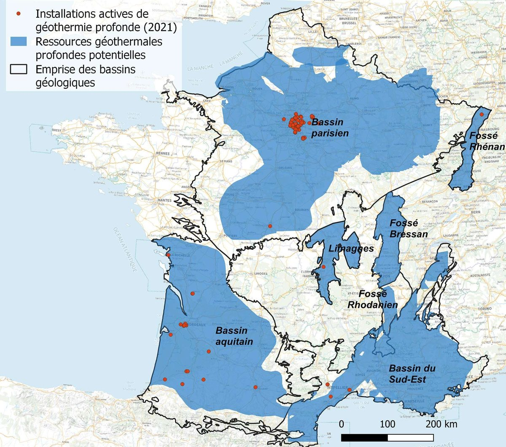
Centrale nucléaire — la troisième source de chaleur. La fission d'un noyau lourd libère une énergie considérable, qui sert, là encore, à faire de la vapeur.
Il s'agit des panneaux photovoltaïques, dont nous avons déjà largement parlé au chapitre précédent. C'est la seule des quatre conversions qui ne fait tourner aucune pièce.
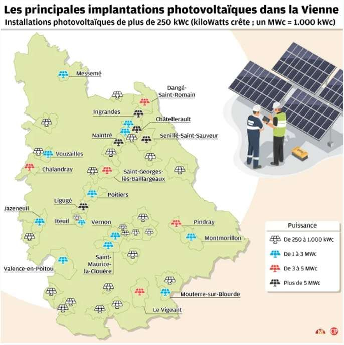
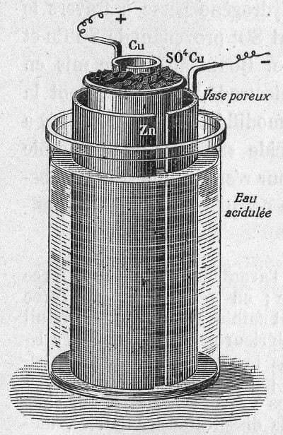
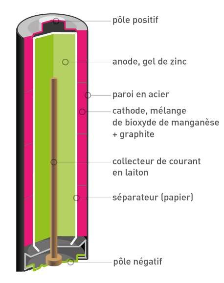
| Énergie de départ | Exemple d'installation | Y a-t-il un alternateur ? |
|---|---|---|
| Mécanique | ||
| Thermique | ||
| Radiative | ||
| Chimique |
Le pétrole se stocke dans un réservoir étanche. L'électricité, non. Voici les quatre familles de solutions — et pourquoi aucune n'est parfaite.
À moins de produire de l'énergie au moment même où on en a besoin, et dans la quantité exacte dont on a besoin, le stockage de l'énergie est un aspect majeur de son utilisation, au même titre que sa production.
Le pétrole a cet avantage très important de pouvoir être stocké facilement : il suffit d'un réservoir étanche. Mais stocker de l'énergie électrique produite par des sources intermittentes n'est pas un problème facile à résoudre. Il existe néanmoins plusieurs solutions, dont bien sûr aucune n'est parfaite.
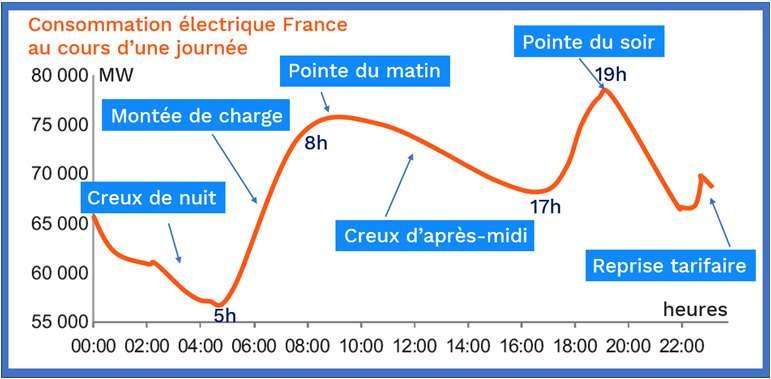
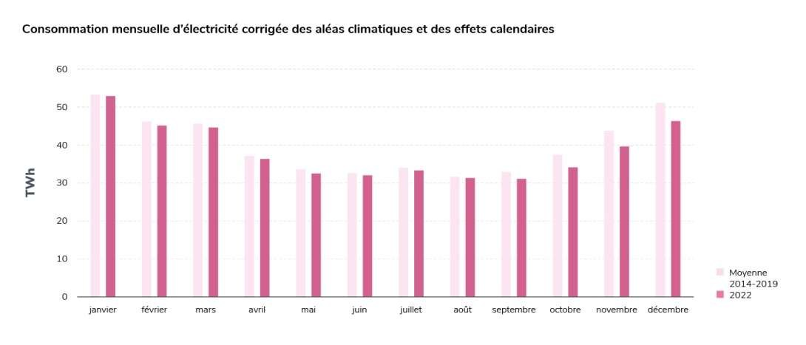
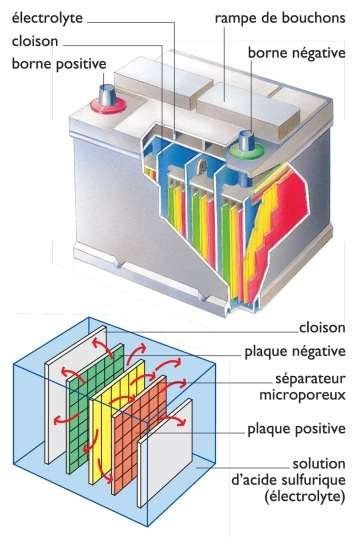
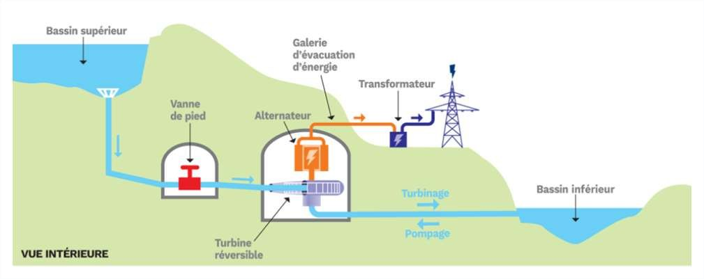
| Sigle | Nom complet | Principe |
|---|---|---|
| CAES | Compressed air energy storage — stockage par air comprimé | on comprime de l'air pour stocker, on le détend pour restituer |
| FES | Flywheel energy storage — stockage par volant d'inertie | on lance une masse en rotation dans le vide, on la ralentit pour restituer |
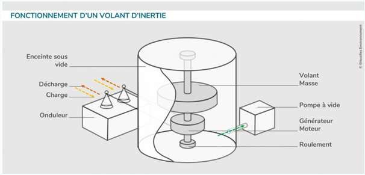
Il existe bien d'autres méthodes de stockage de l'énergie électrique. Cependant, beaucoup de ces technologies sont encore en phase d'étude. Leur rendement, leur capacité de stockage et leur puissance délivrable variables les destinent à des emplois bien différents.
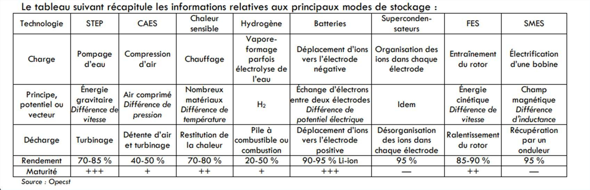
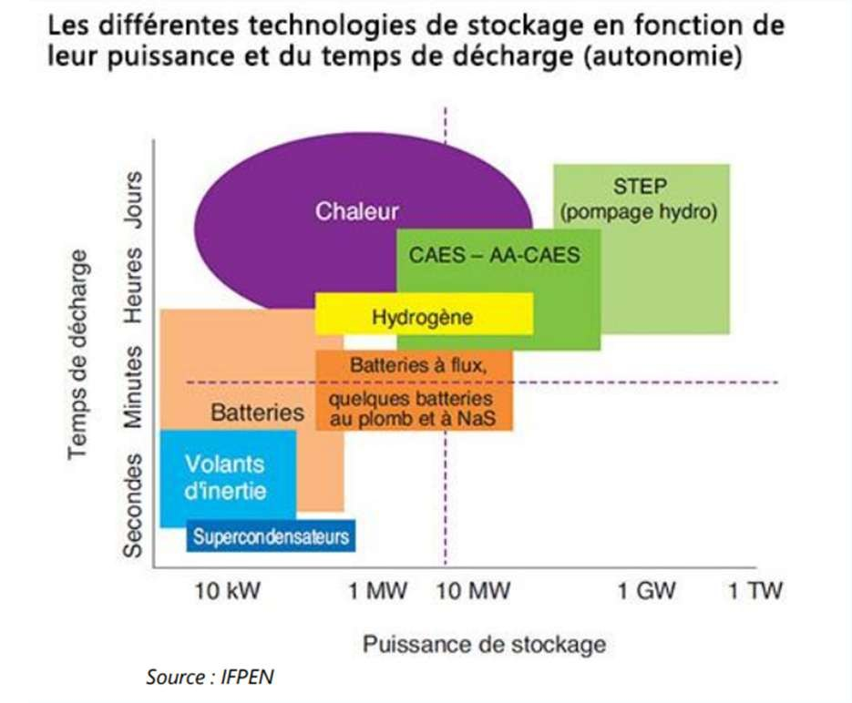
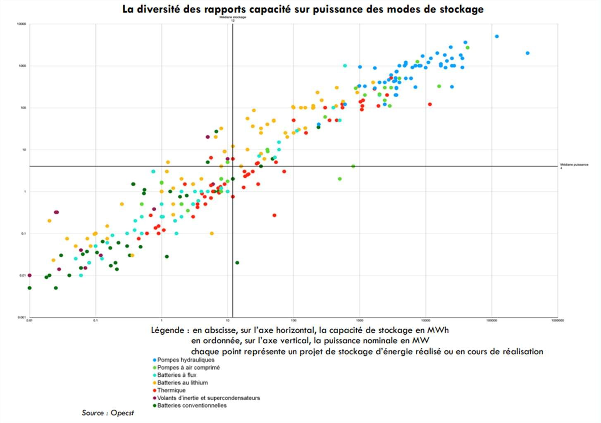
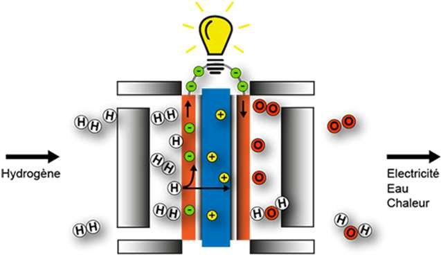
Dans une pile à combustible fonctionnant à l'hydrogène, un réservoir de dihydrogène H₂ alimente la pile. C'est l'un des deux réactifs nécessaires ; l'autre est le dioxygène O₂, pris directement dans l'air.
Ne pas émettre de CO₂ en fonctionnant ne veut pas dire « sans impact ». Neuf critères, puis un cas réel à passer au crible : les tours de béton d'Energy Vault.
Les différentes méthodes de production d'énergie électrique sans combustion et de stockage citées dans ce cours ne sont pas émettrices de CO₂ lors de leur fonctionnement. Elles ne sont cependant ni sans impact sur l'environnement, ni sans contraintes d'utilisation.
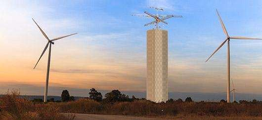
La start-up suisse Energy Vault a conçu un système de stockage d'électricité exploitant l'énergie potentielle de pesanteur d'énormes blocs de béton. Une grue à six branches de 120 mètres de hauteur hisse des blocs de 8 m³ pesant près de 35 tonnes au sommet d'une tour lorsque de l'électricité excédentaire doit être stockée ; les blocs sont redescendus pour restituer de l'électricité lors des périodes de forte demande.
Le rendement des meilleurs moteurs électriques et des meilleurs alternateurs vaut 90 %.
| Je sais… | Où le revoir |
|---|---|
| Décrire des chaînes de transformations énergétiques permettant d'obtenir de l'énergie électrique à partir de différentes ressources primaires. | séance 1 |
| Calculer le rendement global d'un système de conversion (produit des rendements des étapes). | étapes 2.5 et 3.2 |
| Comparer des dispositifs de stockage selon différents critères : capacité, durée, incidence écologique, masse par kWh. | étape 2.4 |
| Analyser des documents présentant les conséquences de l'installation et du fonctionnement d'une centrale électrique. | étapes 3.1 et 3.3 |
| Justifier que l'hydrogène est un vecteur (moyen de stockage) et non une source d'énergie. | étape 2.5 |